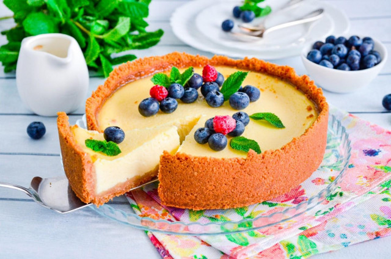

ООО "Русский дар" 
Вернутся в начальный раздел | Вернутся на главную страницу
| Ингредиенты для основы: | Ингредиенты для начинки: |
|---|---|
|
|
Оборудование: плотный пакет, скалка, миска, духовка, форма, венчик и ложка столовая.

Подготовьте продукты. Сначала для основы. Печенье возьмите песочное, типа Юбилейного, К кофе, Топленое молоко. Сливочное масло выбирайте качественное, натуральное, без растительных жиров в составе.

Измельчите печенье любым удобным способом. Проще всего это сделать в измельчителе. За неимением можно воспользоваться скалкой, как это сделала я. Сложите печенье в плотный пакет и прокатайте его скалкой. Оно легко превратится в мелкую крошку.

Сливочное масло растопите любым удобным способом. Можно в микроволновке, можно на водяной бане. Как это сделать читайте в конце рецепта.

Вылейте масло в песочную крошку и перемешайте. Получится масса похожая на мокрый песок, которая будет слепляться в комок, но потом рассыпаться. Возьмите подходящую форму для выпечки. Удобнее, если она будет разъемной (у меня диаметр 20см). Дно застелите пергаментом. Высыпьте в нее крошку. Стаканом утрамбуйте крошку, формируя основу с дном и бортиками. Поставьте основу запекаться в духовку, предварительно разогретую до 180°С на 10 минут.

Пока запекается основа для чизкейка, приготовьте начинку. Подготовьте продукты для нее. Сметану выбирайте натуральную, без растительных жиров, жирностью минимум 20%. Количество сахара можно уменьшить, начинка получается достаточно сладкой. Крахмал возьмите кукурузный.

Как сделать начинку? Сметану вылейте в миску, всыпьте к ней сахар. Вбейте яйца. Обязательно мойте яйца перед использованием, так как даже на кажущейся чистой скорлупе могут находиться вредные бактерии. Лучше всего использовать моющие средства для пищевых продуктов и щетку. Добавьте крахмал и щепотку ванилина.

Обычным ручным венчиком перемешайте продукты до однородности. Миксер не понадобится — для чизкейков не важна пышность.

По прошествии времени (10 минут) достаньте запеченную основу из духовки. Нагрев не выключайте, температуру уменьшите до 160°С.

Вылейте в нее подготовленную начинку. Запекайте чизкейк от 45 минут до 1 часа до стабилизации серединки. Когда это произойдет выключите духовку и оставьте его до остывания.

Остывший чизкейк выньте из духовки. Начинка осядет, не пугайтесь, это нормально. Уберите его минимум на 2 часа в холодильник, а еще лучше на всю ночь — тогда чизкейк окончательно стабилизируется и будет хорошо резаться.

Можете украсить его ягодами. Приятного аппетита!

Шаг 1, Шаг 2, Шаг 3, Шаг 4, Шаг 5, Шаг 6, Шаг 7, Шаг 8, Шаг 9, Шаг 10, Шаг 11.